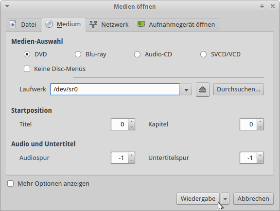

VLC - Medium abspielen
Schritt 1.
Öffne den
VLC-Player
in dem Menü.
Schritt 2.
Klicke nun auf den Menü-Reiter
Medien
Schritt 3.
Zunächst klicke auf Medium öffnen
Schritt 4.
Dort muss das Laufwerk
/dev/sr0
geöffnet werden.

Schritt 5.
Nun wird das Medium abgespielt.